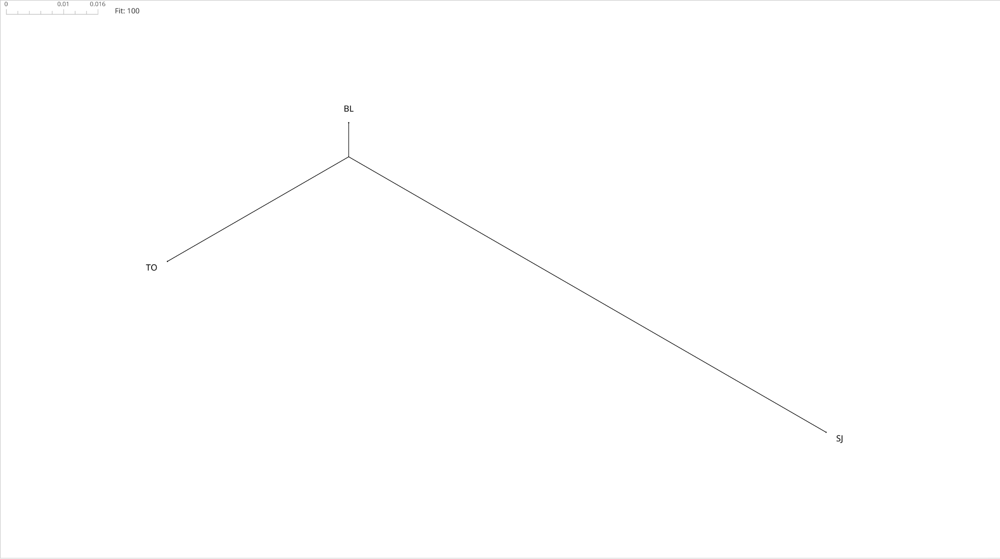
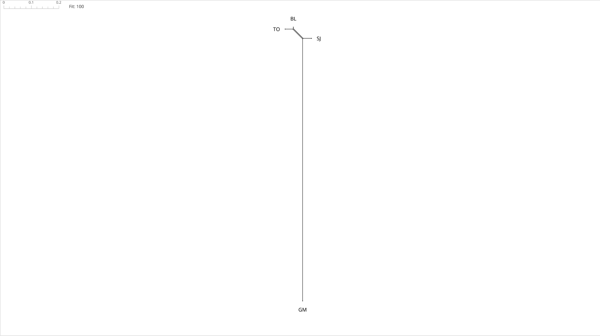

Computational Analysis: What the Collation Shows
Since 1906, nearly every reader of Mah Laqa Bai Chanda has met her through one printed text, Gulzar-e-Mah Laqa (GM). This page tests that text against the three manuscripts that survive from her lifetime, using couplet-level string distance, a phylogenetic network, and a word-level measure of how Dakhni vocabulary was handled. The full argument is in the paper Quantifying Corruption (doi:10.17613/yq3e6-4pc82). The variant apparatus and restored text are in the critical edition Deewan-e-Chanda, self-published open access on Knowledge Commons (doi:10.17613/phn4x-q9342). The collation data is archived at doi:10.5281/zenodo.20587113.
BL (1799), TO (1811) and SJ (1818) are the lifetime manuscripts and GM is the 1906 print; see The Witnesses for each. Every witness was transcribed in full and aligned couplet by couplet (125 ghazals × 5 couplets = 625 positions, cited as ghazal.couplet, for example 5.4). Scribal spelling conventions were standardised; differences in vocabulary, morphology and syntax were kept exactly as written.
100% means the form passed through untouched; 0% means it was removed or replaced every time. The tracked words are a hand-picked list of distinctively Dakhni forms.
Comparing consecutive witnesses shows two very different kinds of change. Across the manuscripts, most couplets pass from one copy to the next unaltered, and the share of heavily altered couplets is small. Between SJ and the print, it flips: only about a quarter of couplets survive untouched, and half are substantially rewritten.
These figures cover couplets present in both witnesses of each pair. Ghazals found in only some witnesses are treated separately in the critical edition.
A NeighborNet turns the distance matrix into a picture: witnesses that sit close together in the text sit close together on the page, and the scale bar shows how far apart "far" is.
With GM left out, BL, TO and SJ spread across a scale of about 0.016. This is the whole range of variation in the lifetime tradition.

Add GM and the scale has to stretch to about 0.2, roughly twelve times wider. BL, TO and SJ shrink into a single small cluster, and GM hangs from its own long branch.

The numbers show that GM is far from the manuscripts. Classical textual criticism shows where it comes from. Two copies rarely make the same mistake independently, so shared mistakes point to common descent. SJ and GM share several, and BL and TO, which have the right readings, do not.
The Salar Jung catalogue gives SJ 123 ghazals, which is wrong: it has 125. GM has the same 125, in emended form. Not one ghazal in GM lacks a source in SJ.
BL and TO give the line in sound metre. SJ drops vo (وہ), which leaves the line out of metre. Gauhar changed the verb to badlīñ haiñ, but never restored vo, so GM's line is out of metre in the same place.
نظریں وہ بدلے ہے بے طرح گراں خاطر ہو
یوں فلک کب تھے سبک یار کی ہم آنکھوں میں
نظریں بدلی ہے بے طرح گراں خاطر ہو
یوں فلک کب تھے سبک یار کی ہم آنکھوں میں
نظریں بدلیں ہیں بے طرح گراں خاطر ہو
یوں فلک کب تھے سبک یار کی ہم آنکھوں میں
BL and TO read mazā (pleasure, savour), which the couplet requires. SJ writes mirā by mistake, and GM copies it.
کل زور تھا مزا صف عشاق میں ترے
قدموں پہ سر رکھے تھا کوئی روبروئے تیغ
کل زور تھا مرا صف عشاق میں ترے
قدموں پہ سر رکھے تھا کوئی روبروئے تیغ
SJ's scribe often drops the internal ghunna, so muñh (face) appears as مہ, the same spelling as mah (moon). In 5.4 the context allows only muñh. Gauhar read the spelling literally and printed mah.
جس وقت دیکھا منہ کو تو ناچار ہی رہا
جس وقت دیکھا مہ کو تو ناچار ہی رہا
Here SJ has mah for muñh and also lacks a word in the first line (tō, shown in square brackets as restored). Gauhar tried to repair the damage by replacing the whole couplet with a new one on a different image.
باغباں جور خزاں سے ہو تو یک لخت خموش
منہ کو بلبل بھی رگ گل سے سئے بیٹھی ہے
باغباں جور خزاں سے ہو [تو] یک لخت خموش
مہ کو بلبل بھی رگ گل سے سئے بیٹھی ہے
کبھی صیاد کا کھٹکا ہے کبھی خوف خزاں
بلبل اب جان ہتھیلی پہ لئے بیٹھی ہے
SJ is arranged by radeef, but six panegyrics to the Nizam and other nobles sit out of order, just before the last ghazal of the ی section. One of them honours her patron, Raja Rao Ranbha Bahadur, and uses his name as its radeef.
The scribe wrote this ghazal in a way found nowhere else in the manuscript. The radeef is written out in both lines of the matla. In the later couplets the scribe left a blank where it belongs, and the reader supplies the name from the matla. The poem reads without difficulty. Gauhar, however, saw the missing radeef, took the text to be defective, and rewrote it. The radeef was dropped, a new metre was chosen, and in effect a new ghazal was composed. Rao Ranbha's name is gone.
جوں عمر خضر کا ہو اجمال راؤ رنبھا
تیری گرہ ہو ایسی ہر سال راؤ رنبھا
ہو تری عمر خضر ماہ جمال
یوں ہی تیری گرہ ہو سال بہ سال
چندا کی ہے تمنا سرکار مرتضیٰ سے
دونوں جہاں کا پاوے تو مال [راؤ رنبھا]
عرض سرکار مرتضیٰ میں یہ ہے
پائے دونوں جہاں کا چندا مال
Square brackets mark the radeef restored where SJ leaves its blank.
The rewrite also changed the poem's meaning. In SJ it is clear that the generosity surpassing Hatim's is Rao Ranbha's. GM's version has no subject at all, which leaves that comparison hanging, and Sameena Shaukat, working from GM, took the ghazal to concern Mah Laqa Bai's own birthday. Computational alignment ranks it as the most heavily altered ghazal in the corpus.
For a century, scholars have taken the northern polish of the printed text to be the poet's own, a deliberate move away from Dakhni to suit the Asaf Jahi court. Scott Kugle's reading of her revisions rests on this assumption, reasonably so, given that GM was the only text anyone had. The manuscripts show something different: her Dakhni never changed. What changed was the text, in 1906.
Each form below stays steady through the lifetime manuscripts, then collapses in print.
| Dakhni form | Standard Urdu | BL → TO | TO → SJ | SJ → GM (print) |
|---|---|---|---|---|
| کسو | کسی | 100.0% | 100.0% | 0.0% |
| نئیں | نہیں | 100.0% | 88.0% | 0.0% |
| جیوں | جیسے / جس طرح | 100.0% | 100.0% | 0.0% |
| نت | ہمیشہ / روز | 100.0% | 90.0% | 8.3% |
| کبھو | کبھی | 100.0% | 93.8% | 16.7% |
کبھو survives partly, most likely because it passes as an acceptable archaism in the northern classical tradition. The others were removed almost without exception. That pattern points to a systematic programme and not to a copyist's carelessness.
A Dakhni word in the qafia, the rhyming word, cannot be swapped alone. The replacement means something different, so the lines built around it have to change too. In the first example below, the Dakhni کسو (kisū) is also replaced by کسی (kisī).
پھر کاہے کو اس طرح کیا شیفتہ اپنا
منظور نہ تھی تجھ کو جو نرباہ کسو کی
بوسہ بھی کوئی مانگے تو دے جان کے خیرات
خاطر کو نہ رنجیدہ کر اے ماہ کسی کی
نہیں اس کی بد وضعی کچھ آج کل سے
یوں ہی ہم تو سارا جنم دیکھتے ہیں
نہیں تیری آتی ہے اک بات ان میں
حسینوں کو تیری قسم دیکھتے ہیں
The qafia changes from nirbāh (from Sanskrit nirvāha) to māh, and from janam to qasam. The rhyme sound survives, but every other word in both couplets is different. Many of the large distances in the "Major" column are rewrites like these, not independent stylistic choices.
Early Deccani poets sometimes scanned کوئی (koī) as a single long syllable. Mah Laqa Bai does this in nine couplets, transcribed کوی in the collation data. Gauhar took it for bad metre and changed the line in all nine. Sometimes the change is one word:
کوی دن کرے صیاد کو اللہ جو مرا صید
کر دوں میں سبھی دام سے اک دم میں رہا صید
کچھ دن کرے صیاد کو اللہ جو مرا صید
کر دوں میں سبھی دام سے یک دم میں رہا صید
دیکھ کہتے ہیں یہ چندا کو موالی علی
حیدرآباد میں کوی اہل وفا رہتا ہے
دیکھ کہتے ہیں یہ چندا کو موالی علی
حیدرآباد میں اک اہل وفا رہتا ہے
In the other seven couplets the repair is larger: words reordered, syntax recast, or a whole line rebuilt to avoid the word.
The same thing happened to Wali Dakhni. In his critical edition of the Kulliyat-e-Wali (1989), Noor-ul-Hasan Hashmi describes how the Nawalkishori and Sayyani editions modernised Wali's language and orthography without saying so, and calls it a grave error. It was a pattern of the early print industry, and how many other Deccani texts still await collation against their manuscripts is an open question.